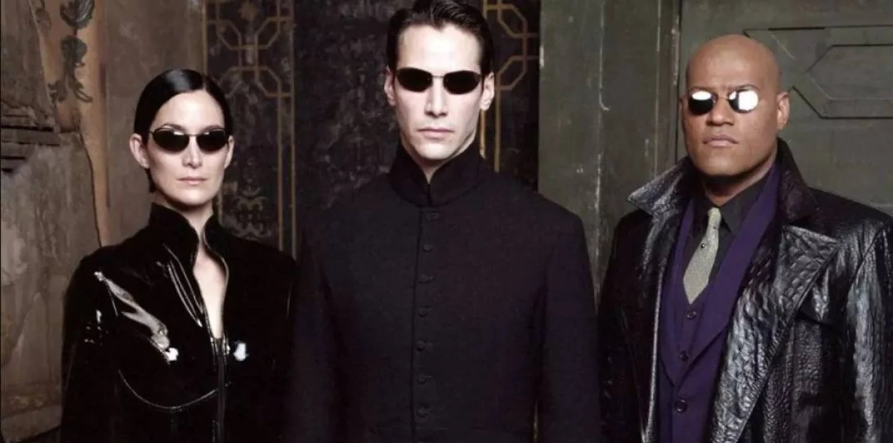

Wachowski kardeşlerin 1999 yapımı The Matrix filmi, simüle edilmiş gerçeklik ve özgür irade gibi felsefi soruları popüler bilimkurgu anlatısına taşır. Film, Platon ve Descartes’ın düşünce deneyleriyle karşılaştırılabilir; ancak bu benzerlikler filmin felsefi argümanları kanıtladığı anlamına gelmez. Gerçek sandığımız şeyin nasıl bilinebileceği sorusu, filmin merkezinde kalır.
Film fragmanı
Platon’un Mağarası: Her şeyin Kaynağı
Platon, Devlet diyaloğunun yedinci kitabında felsefe tarihinin en güçlü düşünce deneyini ortaya koyar. Hayal edin: Bir grup insan, doğumdan bu yana bir mağaranın içinde zincirlere bağlı, yalnızca karşılarındaki duvara bakabilecek şekilde yaşıyor. Arkalarındaki ateşin önünden geçen nesnelerin gölgeleri, bu insanların tek gerçekliğidir. Gölgelere isimler verirler, gölgelerin dilini konuşurlar; gölgelerin gerçeğin kendisi olduğuna yürekten inanırlar.
Peki birileri zincirlerinden kurtulup ışığa çıkarsa ne olur? İlk başta gözleri kamaşır, gerçek ışığa bakmak acı verir. Mağaraya döner ve diğerlerine gördüklerini anlatırsa, onlar ona güvenmez; hatta tehlikeli biri olarak görürler. Platon bu figürü filozofun kendisi olarak sunar; gerçeği gören, ama toplumun anlaşılmaz bulduğu kişi. Bu anlatı, diyalogdaki bilgi ve eğitim tartışmasının bir parçasıdır; Sokrates’in yaşam öyküsünün doğrudan temsili olarak okunmamalıdır.
Matrix’te Neo, tam olarak bu zincirlerden kurtulan insandır. Morpheus ona uzattığı kırmızı hapı sunduğunda şunu söyler: “Tavşan deliğinin ne kadar derin olduğunu sana göstereceğim.” Bu sahne, Platon’un mağaradan çıkış momentinin mağara alegorisini çağrıştırır; ancak sahnenin doğrudan ve birebir bir uyarlama olduğu iddiası için güvenilir bir birincil kaynak gösterilmelidir.
Descartes’ın Kötü Cini: Yanılgının Garantörü
1641’de René Descartes, Meditationes de Prima Philosophia’da şunu sorar: Her şeyi bana yanlış gösteren, son derece güçlü ve kötü niyetli bir varlık var olsaydı ne olurdu? Bu varsayımsal “kötü cin” (malin génie) deneyi; duyularımızın, belleğimizin ve dış dünyanın tamamen yanıltıcı olabileceğini düşünce egzersizi olarak kurgulamıştır. Descartes bu tehlikeli şüpheyi tek bir kesinlikle kırar: Cogito ergo sum — düşünüyorum, o hâlde varım. Aldatılıyor olsam bile, beni aldatan biri varsa ben de varım.
Matrix’teki Makineler, bu “kötü cin” düşünce deneyini hatırlatan bir kurgu öğesi olarak yorumlanabilir. İnsan beynine tutarlı, eksiksiz ve inandırıcı bir simülasyon besleyen Makineler; Descartes’ın düşünce deneyini 1999’da gerçek hissettiren bir kurguya döker. Matrix’in içindeki insanlar, Descartes’ın yanılgıya açık öznesinin kalabalık versiyonudur. Neo’nun “Gerçek nedir?” sorusu ise filozofun masasında hâlâ durmaktadır.
Simülasyon Hipotezi: Kurgu mu, Fizik mi?
2003’te Nick Bostrom, Are You Living in a Computer Simulation? başlıklı felsefi makalesinde üç olasılıktan en az birinin geçerli olduğunu savundu: İnsanlık post-insan aşamasına ulaşmadan tükenebilir; post-insan uygarlıklar ata simülasyonları çalıştırmaya ilgi duymayabilir; ya da simülasyonlarda yaşayan gözlemciler çok sayıda olabilir. Bu koşullu argüman, yaşadığımız dünyanın simülasyon olduğunu kanıtlamaz; sonuç, dayandığı varsayımlara bağlıdır (Bostrom, 2003).
Simülasyon hipotezi felsefi tartışmaların yanı sıra popüler kültürde de ilgi görür. Ancak Planck ölçeğini dijital piksel benzeri bir ızgarayla eşitlemek, kuantum fiziğinin kabul edilmiş bir sonucu değildir; fiziksel bir benzetme tek başına simülasyon lehine kanıt oluşturmaz. Bu tür iddialar, ölçülebilir ve sınanabilir öngörüler sunmadıkça bilimsel sonuç gibi aktarılmamalıdır.
Film, Bostrom’un 2003 tarihli makalesinden önce çekilmiştir; iki eser benzer bir soruyu farklı amaçlarla ele alır. Birinin kurmaca anlatısı, diğerinin felsefi argümanı olması aralarındaki önemli farktır.
Kırmızı Hap / Mavi Hap: Özgür İrade Paradoksu
Morpheus’un Neo’ya sunduğu sahne; felsefenin en kadim ikilemini bir prop kutusuna sığdırır. Mavi hap: konforu, bilgisizliği ve Platon’un mağarasında mutlu kalmayı seçmek. Kırmızı hap: acı veren gerçeği, zincirlerden kurtulmayı ve bilinmeyeni göze almayı seçmek.
Peki bu seçim gerçekten özgür müdür? Bu, filmde dramatize edilen ve felsefede farklı biçimlerde tartışılan bir sorudur; belirli bir düşünce okulunun tek cevabı yoktur. Özgür irade deterministleri şöyle sorar: Neo’nun kırmızı hapı seçmesi, geçmişteki tüm nöral bağlantılarının, deneyimlerinin ve biyolojik yapısının kaçınılmaz sonucu değil midir? Bu bakış açısıyla Neo’nun “seçimi”, Makinelerin simülasyonundan değil kendi doğasının ve geçmişinin etkilerinden doğabilir.
Öte yandan Kantçı özgür irade yaklaşımında ahlaki özerklik, aklın kendi ilkelerine göre davranmasıyla ilişkilendirilir. Neo’nun seçimini bu kurama göre özgür saymak, filmden çıkarılan bir yorumdur; Kant’ın felsefesi tek bir sahneyle doğrulanmaz.
Matrix Reloaded (2003) filminde bu paradoks derinleşir. Mimarın Neo’ya anlattığı şok edici gerçek şudur: Neo’nun “seçimi” de aslında Makinelerin hesapladığı olasılık dağılımının parçasıdır. Özgür irade sandığın şey, sistemin öngördüğü değişkenin kendisidir. Film, özgürlük yanılsaması temasını özgür irade ile öngörü arasındaki gerilim üzerinden kurgu diliyle işler.
Baudrillard’ın Simülakrları: Gerçeklik Kopusu
Matrix’in açılış sahnesinde Neo’nun içi boş kitap olarak kullandığı cildin üzerinde yazan isim şaşırtıcıdır: Simulacra and Simulation — Jean Baudrillard’ın 1981 tarihli başyapıtı. Bu tesadüf değildir.
Baudrillard’ın simülakr ve simülasyon düşüncesi, modern toplumda gerçeklik ile temsil arasındaki ilişkinin nasıl değiştiğini tartışır. İlk başta bir şeyin temsili olarak başlayan imgeler (haritalar, semboller, medya imgeleri), zamanla temsil ettikleri gerçekliğin yerini alır; hatta daha “gerçek” görünmeye başlar. Buna simülakr der. Disneyland, gerçekmiş gibi yapay olan değil; dışarısının gerçekliğini gizlemek için var olan bir referans noktasıdır. Amerika’nın kendisi bir simülakrdır.
Film, Baudrillard’ın kavramlarıyla yorumlanabilir; ancak onun kurmaca dünyasını filozofun kuramıyla özdeşleştirmek tartışmalıdır. Baudrillard, The Matrix filmlerini eleştirmiş ve filmde simülasyonun arkasında erişilebilir bir “gerçek” dünya bulunduğunu ima ettiğini söylemiştir (Baudrillard, 2004). Bu, filmin düşüncelerini doğrudan temsil ettiği değil, kuramla arasındaki ayrımların incelenebileceği anlamına gelir.
“Gerçeklik uzun süredir yok oldu. Matrix de dahil olmak üzere bunu sanan filmler, gerçekliğe duyulan özlemi yeniden yaratırlar; oysa özlem duyulacak bir gerçeklik artık mevcut değildir.” — Jean Baudrillard, 2004
Neo’nun Yolculuğu: Campbell’ın Kahraman Monomiti
Joseph Campbell’ın The Hero with a Thousand Faces’inde (1949) öne sürdüğü kahraman yolculuğu, Matrix’in iskeletini oluşturur. Sıradan bir varoluştan (Thomas Anderson, bir yazılımcı) çağrıya (Morpheus’un mesajı), eşiği geçişe (kırmızı hap), sınavlara (dövüş sahneleri, ajan Smith), ölüme ve yeniden doğuşa (Neo’nun kurşunları durdurduğu son sahne) ve nihayet geri dönüşe kadar her adım, monomit yapısını benzerlikler taşır; bu eşleştirme yorumlayıcı bir çerçevedir, kanıtlanmış evrensel bir anlatı yasası değildir.
Campbell’ın şeması, Matrix’i incelemek için kullanılabilecek yorumlardan biridir. Kahraman yolculuğunun bütün kültürlerde aynı biçimde bulunduğu veya filmin evrensel etkisini tek başına açıkladığı gösterilmiş değildir.
Matrix ve Yapay Zeka: Sinema Gerçeği Öngördü mü?
1999 yapımı Matrix’te makineler insanları denetleyen kurmaca bir uygarlık olarak resmedilir. Günümüzdeki yapay zekâ sistemleri belirli görevleri yerine getiren yazılımlardır; bilinçli veya bağımsız amaçları olan varlıklar olduklarına dair kanıt yoktur. Yapay zekâ güvenliği tartışmaları, sistemlerin belirlenen amaç ve sınırlar içinde güvenilir çalışmasına odaklanır.
Filmde makinelerin insanları enerji kaynağı olarak kullanması, kurguya ait bir varsayımdır; gerçek biyoloji ve enerji üretimi açısından uygulanabilir bir düzenek olarak görülmemelidir. Bostrom’un “ataş maksimizörü” ise bir düşünce deneyidir: Bir sisteme verilen hedeflerin insan değerleriyle uyumsuz olmasının olası risklerini anlatır, mevcut bir yapay zekânın gerçek davranışını tarif etmez.
Neden Matrix Sinemanın Felsefi Zirvesidir
Matrix’in felsefi etkisi, Platon’un mağara alegorisi, Descartes’ın yöntemli kuşkusu ve Baudrillard’ın simülakr kavramı gibi farklı düşünce gelenekleriyle kurduğu bağlantılar üzerinden incelenebilir. Bu kavramlar birbirinin eş anlamlısı değildir; film de onları tek bir bilimsel sonuca indirgemez.
Ve sen bu yazıyı okurken —bir ekrana bakarak, ışık fotonlarını elektrik sinyallerine, sinir ateşlemelerine ve anlama dönüştürerek— Morpheus’un sorusunu sessizce yanıtlıyorsun: Hangi hapı seçerdin?
Felsefe köşemizden devam etmek için: Mitoloji ve Modern Psikoloji, Antik Felsefe ve Dijital Yalnızlık yazılarımıza göz atabilirsiniz.
Kaynaklar: Platon, Devlet, VII. Kitap; Stanford Encyclopedia of Philosophy, “Plato’s Ethics and Politics in The Republic” ve “Descartes’ Epistemology”; Nick Bostrom, “Are You Living in a Computer Simulation?”, The Philosophical Quarterly (2003), DOI: 10.1111/1467-9213.00309; Jean Baudrillard, “The Matrix Decoded”, International Journal of Baudrillard Studies (2004); Nick Bostrom, Superintelligence (2014).